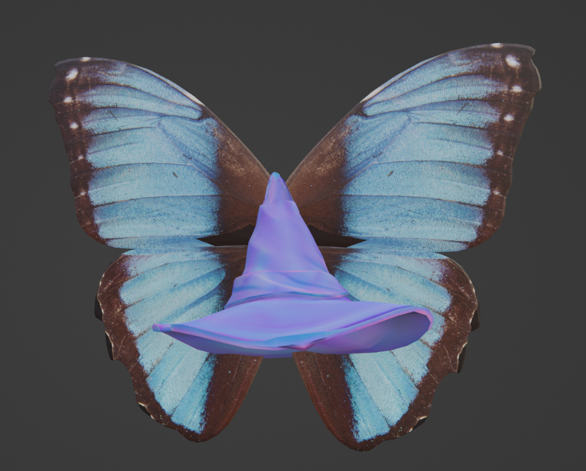

The Flight of Fate

A reimagined 3D model that transforms a wizard hat into a symbol of personal growth and self-determination.
This piece remodels an existing 3D wizard hat, conceptually and physically transforming its meaning. While the original object resembled the sorting hat from Harry Potter - an object that definitively tells you who you are - this reimagining incorporates a butterfly as a symbol of growth and change.
The overall concept evolved from a deterministic view of identity to one that embraces personal growth and self-determination. It represents how no one or nothing can truly define who you are, as you have the power to grow and change.
Based on: Original 3D Model
Back to Works